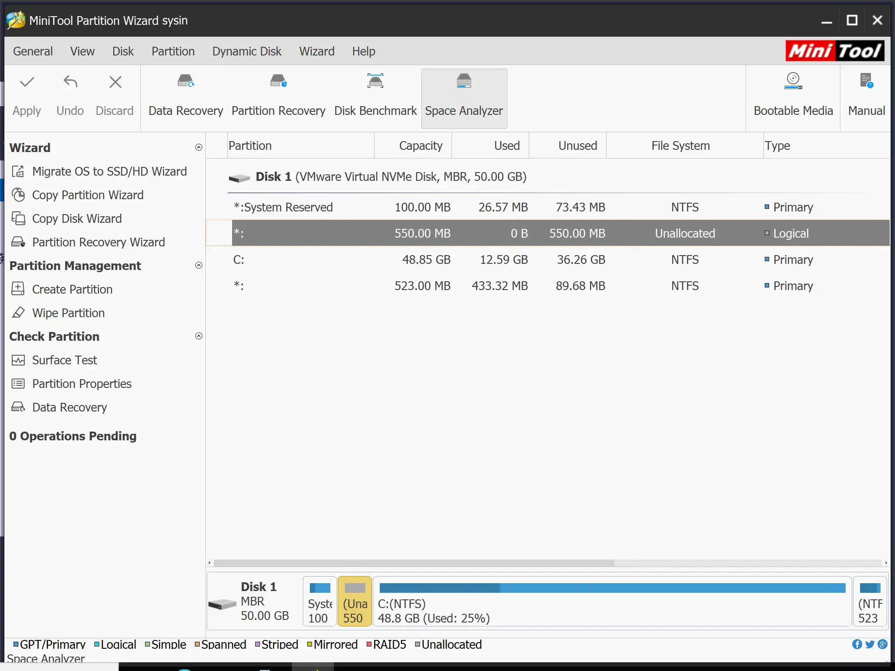
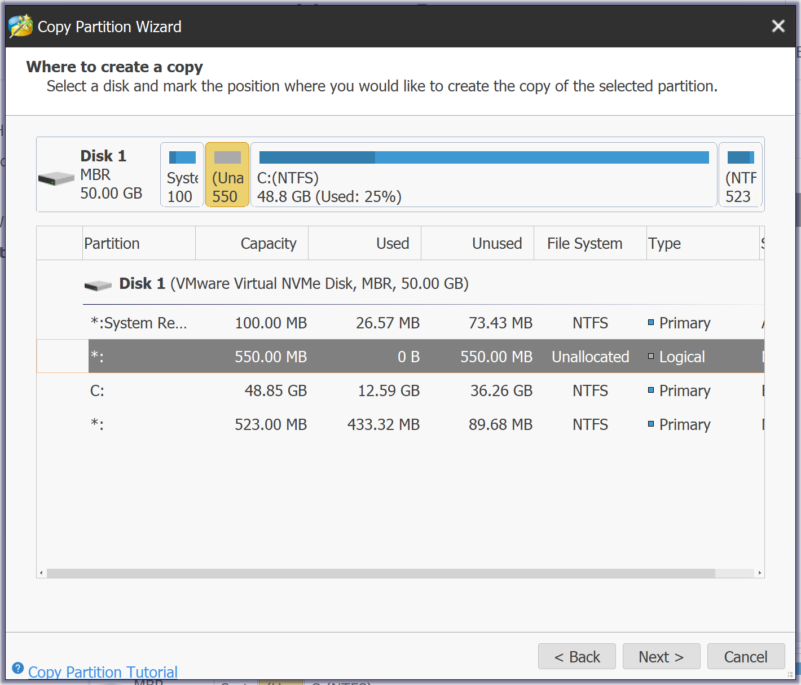
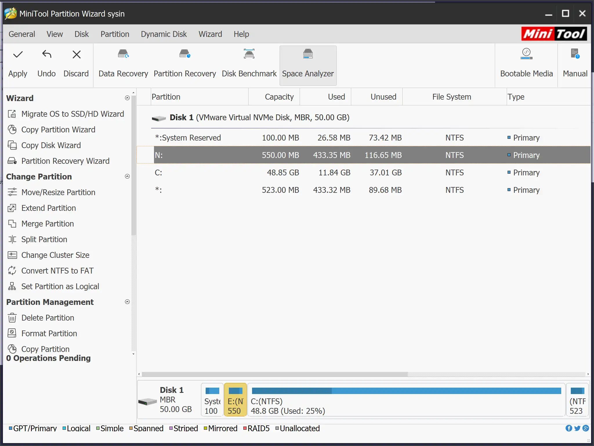
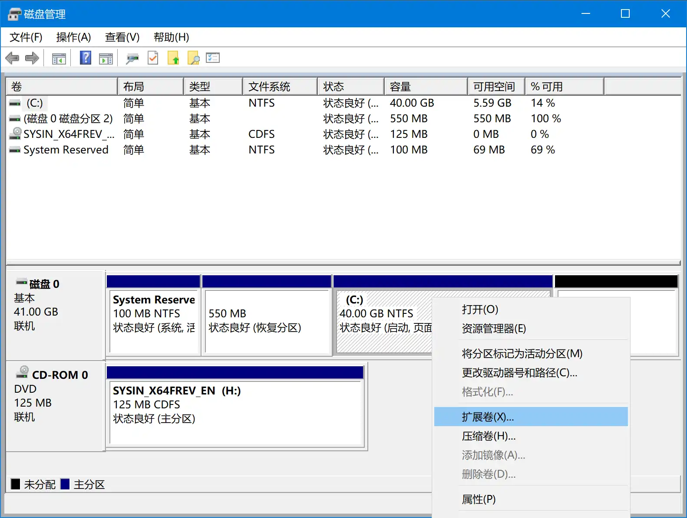

请访问原文链接：如何将 Windows 10、11 的恢复分区 (Recovery Partition) 移动到 C 盘之前，恢复 C 盘容量调整功能 查看最新版。原创作品，转载请保留出处。
作者主页：sysin.org
笔者这几天在制作 Windows Server 2022 OVF 的时候，发现 C 盘不能扩展容量了（虽然可以压缩，但是压缩的未分配空间无法合并到其他分区），在这虚拟化或者云环境中是非常糟糕的事情。本文提供了将 Windows 10（包含 Windows Server 2022）和 Windows 11 分区恢复到正常模式的方法，恢复正常调整 C 盘容量大小的功能。
Windows Server 2022 磁盘分区新变化
在 Windows Server 2022 中，再次调整了系统分区的容量，甚至将恢复分区移动了 C 盘（操作系统分区）之后，安装后是这样的：System Reserve 100M（如果使用 EFI 引导，则该 100M 为 EFI System Partition），C 盘后增加了一个 523M 的 Recovery partition（恢复分区），导致无法调节 C 盘容量。

在 Windows 11 中同样存在此问题，恢复分区的大小变成了 644M（22H2 为 597M）。
不得不佩服 A3 的随性😄

解读：关于 Windows 10 的恢复分区
说明：Windows Server 2016、2019 和 2022 皆为 Windows 10 Server，以下描述也适用。Windows 11 版本号仍然是 10.0 同样适用。
在 Windows 10 中，Windows 磁盘上可以有 Windows 恢复分区或计算机制造商 OEM 工厂恢复分区。
Windows 恢复分区允许您启动到 Windows 恢复环境 (WinRE) 以在出现问题时恢复您的计算机。
OEM 恢复分区允许您按特定键（通常为 HP 为 F9，为戴尔为 F12）将您的计算机恢复到出厂默认设置。此分区通常约为 12-18 GB，比 Windows 恢复分区大得多。
Windows 恢复环境 (Windows Recovery Environment，简称 WinRE) 是一种恢复环境，可以修复导致操作系统无法启动的常见问题 (sysin)。默认情况下，WinRE 预加载到 Windows 10 桌面版（家庭版、专业版、企业版和教育版）中。
WinRE 包括以下工具：
自动修复和其他故障排除工具。有关详细信息，请参阅 Windows RE 故障排除功能。
- 系统还原
- 启动修复
- 卸载更新
- 启动时的命令提示符
- 系统映像恢复
- UEFI 固件设置
- 返回到以前的 Windows 版本
按钮复位。此工具使您的用户能够快速修复自己的 PC，同时保留他们的数据和重要的自定义设置，而无需提前备份数据。有关详细信息，请参阅按钮重置概述。
- 刷新 Windows 10
- 重置 Windows 10
在 Windows 10 Version 1909（包含）及以前的版本，只有一个 System Reserved 分区在最前面，包含了 WinRE，通常在 500M - 550M（早期的 Windows 版本该分区更小一点），这样的益处是可以直接在 “磁盘管理” 工具中直观的增加或者减少 C 盘容量，而无需借助第三方工具。

从 Windows 10 Version 2004（包含）开始（包括 Windows Server 2022，21H2），系统将在 C 盘后面自动创建一个 Recovery partition，该分区大小大约 520M - 530M 不等，巨硬 A3 不讲究，容量大小也很随意，Windows 11 这个容量变成了 644M。System Reserved 分区将变为 100 M 仍然在最前面，负责系统引导（如果使用 EFI 引导，则该 100M 为 EFI System Partition ）。这将导致再也无法直接调整 C 盘分区大小，即使借助第三方工具，操作步骤也是非常繁琐的。

所以我们需要在系统安装完毕立刻调整该 Recovery partition 的位置，将其划分到 C 盘（操作系统分区）之前，然后重建 Recovery partition。更加简单粗暴的方法是直接将其删除，也不用过于担心 (sysin)，可以借助 USB 或者 ISO（虚机）引导 Windows PE 来替代 WinRE 的恢复功能。
本文的目标是在 System Reserved 分区之后，C 盘（操作系统分区）之前，创建一个 550M 的恢复分区，并删除原有的恢复分区，恢复 C 盘可以自由调整大小的该有功能。
准备：备份数据和所需软件
请先进行数据备份
如果这是你正在使用的电脑，请务必备份数据，虽然正确理解以下操作并没有风险，但是任何时候备份都是必要的。
专业分区工具
本例使用 MiniTool Partition Wizard，类似的软件有 Acronis Disk Director，Paragon Partition Manager 等，可以根据使用习惯选择，操作都是类似的。
系统自带工具
在执行以下命令之前，您必须知道它们的作用。请参阅 MS 的文档链接：diskpart, dism and reagentc
操作步骤
后面的步骤，我们分别用 MiniTool Partition Wizard 和（或）diskpart 命令进行操作，描述在前面的为建议操作方式。
以下操作同样适用于 Windows 10、11，只是因为 A3 的随性，恢复分区的容量各不相同，请根据实际容量修改。
1. 创建一个新的 550M 的恢复分区
在 System Reserved 分区之后，C 盘（操作系统分区）之前，创建一个 550M 的恢复分区。创建一个分区系统自带工具都可以完成，但是要在这个指定位置创建，似乎只能用第三方工具完成。
之所以选择创建 550M 这个数字，一方面是与原有分区有所区别，另外这个数字也没有那么随意😄
如图，我们可以看到默认三个分区，右键点击 C 分区，选择 “Move/Resize”

拖拽滚动条，然后填写数字 (sysin)，确保结果如下（Apply，重启后生效）：

2. 复制（克隆）分区
现在我们需要将原有的恢复分区复制（克隆）到新的恢复分区
点击 “Copy Partition Wizard” 开始
选择原有恢复分区

选择目标分区

确认，注意将分区选择为 Primary（Create As: Primary）

只有 523M，没有关系，我们 Extend Partition

结果如下
本例中，自动给 550M 的新恢复分区指派了盘符 E，这里我们将其盘符更改为 N（new），请注意以下命令根据实际盘符修改。

替代方法：使用 diskpart
官方参考文档：Capture and apply Windows, system, and recovery partitions
使用
diskpart给当前 recovery partition 分配一个盘符，这里定义为 O（original）:1
2
3
4
5DISKPART> list disk
DISKPART> select disk <the-number-of-disk> #默认一块磁盘这里为 0，即：select disk 0
DISKPART> list partition
DISKPART> select partition <the-number-of-current-recovery-partition> #这里一般是 3，即：select partition 3
DISKPART> assign letter=O从当前 recovery partition 中捕获映像:
1
Dism /Capture-Image /ImageFile:C:\recovery-partition.wim /CaptureDir:O:\ /Name:"Recovery"
将捕获的映像应用到新的 recovery partition（上述定义 550M 新恢复分区的盘符为 N）:
1
Dism /Apply-Image /ImageFile:C:\recovery-partition.wim /Index:1 /ApplyDir:N:\
3. 使用 REAgentC 命令配置 WinRE 映像
以下三条命令分别是：
- 禁用 WinRE 映像启动
- 指定 WinRE 映像的位置（这里盘符是 N）
- 启用 WinRE 映像启动
1 | reagentc /disable |
4. 隐藏新的恢复分区
使用 diskpart 命令，操作如下：
1 | diskpart |
分别针对 UEFI 和 BIOS 固件不同的操作方式来隐藏原有 recovery partition:
For UEFI:
1
2
3
4DISKPART> select volume N
DISKPART> set id="de94bba4-06d1-4d40-a16a-bfd50179d6ac"
DISKPART> gpt attributes=0x8000000000000001
DISKPART> removeFor BIOS:
1
2
3DISKPART> select volume N
DISKPART> set id=27
DISKPART> remove
重启后 N 分区又自动出现？
使用 MiniTool Partition Wizard，右键点击 550M 的新的恢复分区，选择 “Change Letter” 修改值为 “None” 即可。
⚠️ 经测 Widows Server 2022 2022.06 至 09 更新版本中修改 “Change Letter” 为 “None” 会导致 WinRE 无法启动。
且不做任何修改使用默认的 WinRE 启动会蓝屏（虚拟机环境），即使上述不删除 “Change Letter”，启动后功能也简化了，仅仅是调出 “高级启动选项”，等价于在计算机重启时长按 F8 键，恢复分区已经没有存在意义，通过命令 reagentc /disable 禁用 WinRE 后直接删除恢复分区即可。
另外，2022 年 6 月开始恢复分区默认容量变为 578M。
5. 删除原有恢复分区
使用 MiniTool Partition Wizard，右键点击原有的恢复分区，选择 “Delete” 即可。
或者使用 diskpart 命令，操作如下：
1 | DISKPART> select volume O |
6. 重启到 WinRE 验证结果
设置 -> 更新和安全 -> 恢复，点击 “立即重新启动”，即可重启到 WinRE。
注意：如果是远程桌面连接，上述恢复页面显示空白，不可用。
如图所示，所有功能都可以正常工作。
本例是虚机下的示例，不同的硬件环境下功能可能有所差异。


7. 终于可以正常调整磁盘大小
现在正常启动到系统，打开 “磁盘管理”，终于可以正常调整磁盘大小：“压缩卷” 和 “扩展卷”。

结语
巨硬 A3 太…不讲究，我们搞了这么多复杂的操作，才恢复了盖茨时代正常的磁盘分区的功能，实在无语。。。。。。
巨硬 A3 上任 8 年，一个控制面板没有修改好（设置和控制面板仍然混乱，麦德龙风格和经典风格分裂设计仍然没有解决），再难以企及盖茨时代巅峰，你还以为你是在用盖茨的 Windows 吗？今天的 Windows 全球市场份额已经从 95%+ 下降到 30% 左右，其他全部是 Unix-Like 系统的天下，说 A3 沦为小众不为过。。。。。。
更新：简单操作步骤（删除分区）
经测在 2022 年 6 月 至 9 月更新版本中，不做任何修改使用默认的 WinRE 启动会蓝屏（虚拟机环境），即使通过上述修改可以启动，启动后功能也简化了，仅仅是调出 “高级启动选项”，等价于在计算机重启时长按 F8 键，恢复分区已经没有存在意义。
禁用 WinRE（可选，下一步删除恢复分区后将自动禁用）
1
reagentc /disable
使用
diskpart删除 recovery partition:1
2
3
4
5
6diskpart
DISKPART> list disk
DISKPART> select disk <the-number-of-disk> #默认一块磁盘这里为 0，即：select disk 0
DISKPART> list partition
DISKPART> select partition <the-number-of-current-recovery-partition> #这里一般是 3，即：select partition 3
DISKPART> delete partition override

虚机模板下载：
更多：Windows 下载汇总

文章用于推荐和分享优秀的软件产品及其相关技术，所有软件提供免费版或试用版。内容若侵犯了您的版权，请联系作者删除。如果您喜欢这篇文章，或者觉得它对您有所帮助，亦或发现有不当之处；欢迎发表评论，也欢迎分享这个网站，或者赞赏一下，谢谢！提示：捐赠或赞赏属于自愿赠予行为，提交后即表示您对作者的支持与认可。为避免误操作，请在确认前仔细检查金额，支付完成后将无法撤销或退还。
 支付宝赞赏
支付宝赞赏  微信赞赏
微信赞赏赞赏一下
敬请注册！点击 “登录” - “用户注册”（已知不支持 21.cn/189.cn 邮箱）。 请勿使用联合登录（已关闭）。